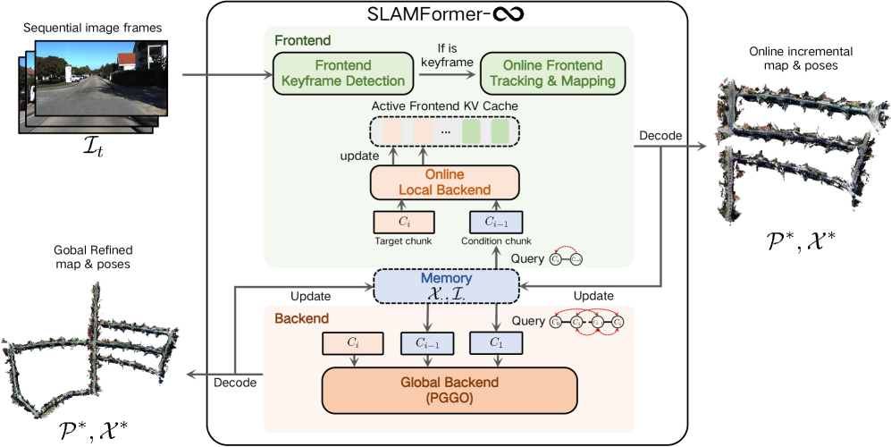
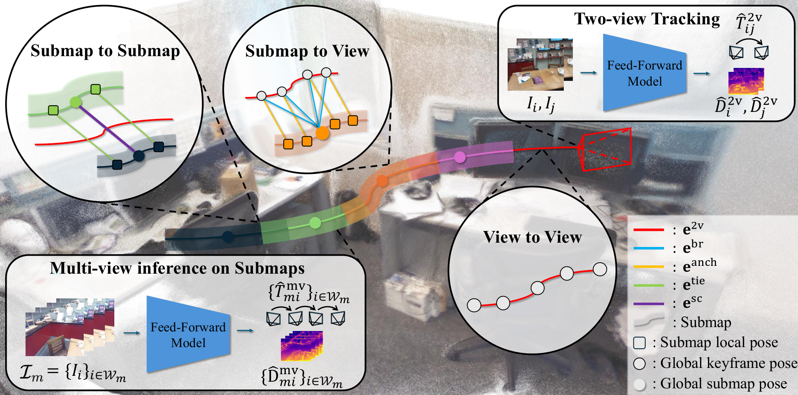
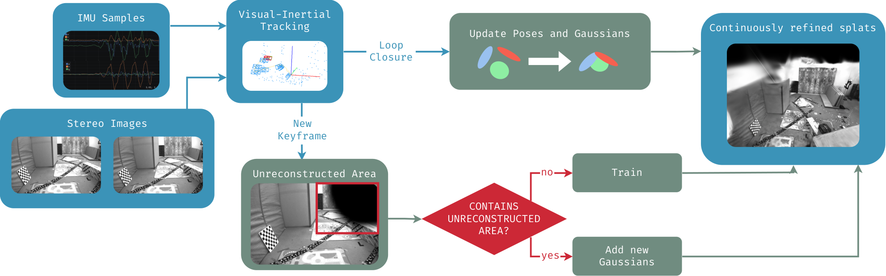
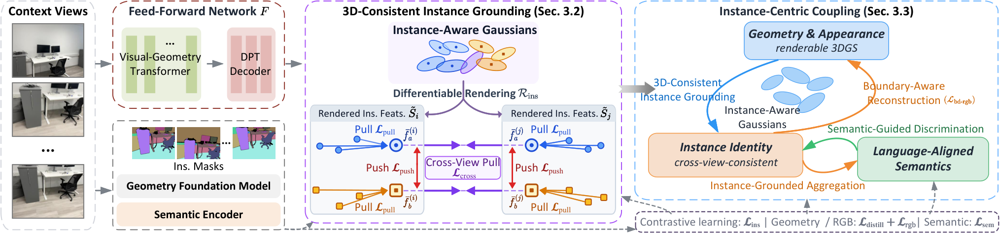
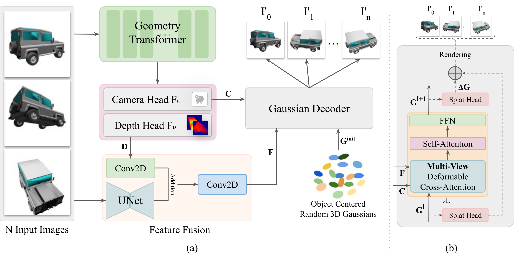
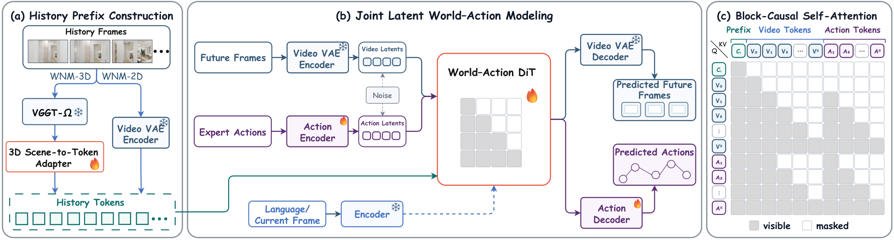

Executive Summary
长序列前馈 SLAM 正在把“窗口网络”改造成可持续系统。 SLAMFormer-∞ 用显式位姿—几何图和神经 PGGO，把局部窗口接到全局优化；UniSim-SLAM 则用统一 Sim(3) 因子图对齐双视图前端与多视图子图。两者共同说明，前馈几何要进入无界序列，关键不是单次网络更大，而是可复用状态、尺度约束和异步后端。
前馈 3DGS 的表示正在脱离像素一一对应。 FlexSplat 用固定预算的高斯查询，InstanceSplat 把实例/语义原型直接放进高斯属性，InfiniSplat（摘要与代码级）改用几何引导的表面对齐采样。证据支持“表示自由度提升”，但并不支持它们已普遍替代有位姿或逐场景优化方法。
导航世界模型开始把几何状态、动作和物理可执行性放在同一评估链上。 WNM-3D 的显式 3D 历史记忆对已见场景的 SR/SPL 提升清楚，但未见场景收益小；HumanoidVLN 则显示不同人形本体的跌倒率和成功率差异足以改变算法排序，纯视觉导航分数不能代替物理可部署性。
Deep-read Papers
| 论文 | 系统/框架图 | 解决的问题 | 方法 / 结构 | Insight 与数学知识 | 实验与效果 | 复现与启发 | 阅读证据 |
|---|---|---|---|---|---|---|---|
| SLAMFormer-∞ 长序列 SLAM神经图优化 |
 Fig. 3：前端、局部后端与全局 PGGO；已视觉确认。 |
把固定窗口前馈 SLAM 扩展到无界视频，同时避免全历史一次性推理的显存和尺度漂移。 | 以局部 memory condition 定义坐标系与尺度；图节点包含相机位姿和几何，位姿边显式连接、几何相关性由 Transformer 建模。前端持续跟踪，局部后端按关键帧触发，全局 PGGO 在回环或结束时迭代。 | PGGO 本质是学习的阻尼更新：在 SE(3) 李代数上预测位姿增量并用 exp/log 映射更新；显式图连接把“谁与谁约束”从注意力中分离。论文也承认图连边由前端/回环预定义，错误连接会传递到全局解。 | KITTI 平均 ATE 23.011 m，对 VGGT-Long 26.358 m；去掉序列 01 后为 15.653 vs 19.298 m。Waymo 平均 1.813 vs 1.996 m。室内 TUM/7-Scenes ATE 为 0.066/0.046 m，但旧 SLAMFormer 在部分室内项更好，不能概括为全面领先。 | 训练为四种共享权重模式，室内 12 帧、室外 36 帧，48 张 A100、10 epochs，训练门槛高。工程上最值得复用的是“轻前端 + 局部图 + 低频全局优化”的调度，而非整网照搬。 | 全文级：读 Intro、Method、训练策略、TUM/7-Scenes/KITTI/Waymo 表、消融、结论和限制；Fig. 3 从 caption/section 定位并核图。 |
| UniSim-SLAM Sim(3)异步后端 |
 Fig. 2：双视图前端、子图和统一 Sim(3) 图；已视觉确认。 |
前馈两视图跟踪低延迟但易累积漂移，多视图网络几何稳却延迟高；目标是在未知尺度下统一两类预测。 | 快速双视图前端连续输出；周期性多视图子图提供稳定几何。统一 Sim(3) 因子图同时含全局相机节点和子图节点，以时序、视图—子图、子图—子图及尺度因子连接，LM 求解非线性最小二乘；回环检索后新建联合子图。 | Sim(3) 比 SE(3) 多一个尺度自由度，适合融合不同网络的相对尺度。消融中去掉后端，7-Scenes ATE 从 0.020 增至 0.124 m，说明尺度/子图约束不是装饰性模块。 | 7-Scenes 平均 ATE 0.020 m，VGGT-SLAM 0.037、ViSTA 0.049；重建 Acc/Comp/Chamfer 为 0.035/0.046/0.041 m。TUM 非标定设置平均 0.032 m。VGGT 前端 197 ms、ATE 0.020；STA 前端 35 ms、ATE 0.027，ViSTA 同为 35 ms、ATE 0.049。 | 后端异步但组件耗时含 645/933 ms 级步骤；正文“约 25 FPS”与 VGGT 前端 197 ms 的口径不完全一致，部署前应按选定前端重测端到端吞吐。 | 全文级：读方法、全部主表、边因子消融、延迟附录、结论；无独立 limitations 节，限制由时延和失败序列分析归纳。 |
| Stipple 在线 3DGSVIO |
 Fig. 2：锚帧稀疏化、深度、占据裁剪与连续优化；已视觉确认。 |
实时 VIO-Splat 系统常在每个关键帧做深度和高斯初始化，造成冗余、过密和异步优化追不上输入。 | Basalt 立体惯性跟踪全部帧；仅当未覆盖像素比例超过 0.05 才建锚帧，约为关键帧 10%。只对锚帧运行 FoundationStereo，0.1 m hash occupancy 裁剪已覆盖种子；短 burst 拟合后转入后台连续优化，并按 SSIM 自适应增密。 | 把高斯所有权绑定到锚帧，使回环修正可直接变换均值/协方差。增密样本数与 1 − meanSSIM 成比例，是把渲染残差变成预算控制信号，而不是固定增密率。 |
EuRoC Vicon 子集平均 PSNR/SSIM/LPIPS：23.49/0.86/0.39；PhotoSLAM 20.22/0.78/0.48，CaRtGS 22.41/0.82/0.45。Monado MGO 四序列均完成，平均 24.91 PSNR、0.83 SSIM、156 FPS、46k splats、2.6 GB；基线只有 MGO05 可用。 | 论文修正了若干基线喂帧率问题，比较更接近真实播放；但评估视角与各方法训练关键帧重合且不统一，可能偏向各自选择。未报告跟踪 ATE，因为跟踪器不是贡献；需单独验证回环后轨迹。 | 全文级：读系统、实时调度、EuRoC/Monado 表、消融和局限；Fig. 2 核图。未找到官方完整代码，不能判断实现成熟度。 |
| InstanceSplat 语义 3DGSPose-free |
 Fig. 2：几何、实例和语义联合解码；已视觉确认。 |
开放词汇 3D 实例建图通常依赖已知位姿和逐场景优化，难以快速从无位姿图像生成可查询的实例级 3D 表示。 | DINOv2 特征进入 24 层交替 view/cross-view Transformer；DPT 头预测相机、点图和深度，第二解码器输出高斯外观、几何、8D 实例嵌入和语义。置信度体素化后，在渲染空间做实例原型拉近/推远和跨视角对齐。 | 原型损失把同实例内方差压低，并用语义相似度调节不同实例的 margin；边界感知 RGB 损失把实例嵌入的不连续性反馈到几何边界。关键是语义、实例和渲染不再是后处理流水线。 | LERF 8-view：2.75 s、mIoU 63.22、Acc@0.25 80；OpenGaussian 为 55 min、26.23、35.29。16-view 为 3.65 s、53.85、73.33，反而低于 8-view。相对 IGGT，T-mIoU 64.03 vs 61.99、T-SR 51.04 vs 45.15。 | 训练覆盖 ScanNet/ScanNet++ 1565 scenes 与 RE10K 5137 scenes，2×A800 约 21 h。16-view 下降提示域偏移和位姿误差会累积；聚类成本随视图和高斯数量增长。 | 全文级：读架构、损失公式、LERF/IGGT 表、边界消融、训练细节和 limitations；Fig. 2 核图。项目页在检查时不可用。 |
| FlexSplat Feed-forward 3DGSQuery |
 Fig. 1：VGGT 几何前端与 query-based Gaussian decoder；缩略图已视觉确认，点击 SVG 原图。 |
像素对齐高斯数量随分辨率增长，并把每个像素固定成一个 primitive；同时多视角目标物体重建通常依赖输入位姿。 | 联合训练 VGGT 相机/深度分支；融合 UNet 外观和深度特征；在估计场景中心附近初始化固定数量查询，经多视图 deformable cross-attention 投影采样，解码同一组跨视图高斯。1/2/4 视图使用 10k/15k/20k 查询。 | 查询数与像素数解耦，4×256² 输入不再需要约 262k 像素高斯。深度一致性采用不确定性加权，减少几何噪声对渲染损失的硬约束；但相机误差仍会通过投影传播。 | GSO 4-view 无输入位姿：PSNR 29.73、SSIM 0.949、LPIPS 0.041；距有位姿 UniGS 0.69 dB/0.012 SSIM。1→2→4 views 为 21.93→27.10→29.73 dB。旋转扰动 0°→20° 时 PSNR 29.73→21.08。 | 4×RTX 4090 训练，当前仅 object-centric；冻结 VGGT 从 26.28 降至 24.90 dB，随机初始化崩溃。代码有训练/评估/消融配置和测试，但没有许可证与预训练权重说明，需先跑最小 demo。 | 全文级 + 代码级：读方法、GSO/ShapeNet 表、消融、噪声分析、限制；核对 Fig. 1，并检查官方仓库入口和核心 decoder。 |
| WNM-3D VLN世界模型 |
 Fig. 1：3D 历史 token、视觉—动作 flow 与闭环执行；已视觉确认。 |
生成式 VLN 世界模型把历史压成 2D 帧，容易丢失跨视角几何；直接 RL 又可能在策略尚未稳定时破坏预训练生成能力。 | 以 DreamZero/Wan2.2 TI2V 5B 为视觉—动作 flow 主干；冻结 VGGT-Ω，训练 3D Scene-to-Token Adapter 生成历史前缀，block-causal attention 联合预测未来视觉与 4×8 个动作；闭环只执行第一动作块。 | 三阶段为 A* SFT、DAgger 在线纠偏、DanceGRPO。实验证明 curriculum 很重要：SFT 后直接 GRPO 反而下降，先用 DAgger 把分布拉回可学习区域再做策略优化更稳。 | GN-Bench seen：NE 2.0、SR 81.3、SPL 78.3；unseen：4.4、46.8、43.5。相对 2D memory，seen SR/SPL +5.7/+5.4，unseen 仅 +0.9/+0.7。DAgger 将 seen SR 49.6→80.6，DanceGRPO 再至 81.3；直接 GRPO 为 39.4。 | 训练含 16k A* 任务，历史 K=33。未见场景增益小，说明 3D 记忆仍强依赖训练环境。flow/action 一致性只在近目标 XY/STOP 上评估，未覆盖 yaw 与整段未来。 | 全文级：读三阶段训练、GN-Bench 主表、3D/2D 消融、RL 顺序消融、附录一致性分析和结论；Fig. 1 核图。未核验训练代码。 |
| HumanoidVLN 物理导航3DGS Sim |
 Fig. 2：多智能体指令生成—审阅—改写流程；已视觉确认。 Fig. 2：多智能体指令生成—审阅—改写流程；已视觉确认。 |
现有 VLN 多在点质量或轮式平台上评估，无法反映人形机器人身高、足式控制和跌倒风险对任务成功的影响。 | Isaac Sim 中集成 4 种人形本体，底层 RL locomotion 配合 PD/MPC 跟踪；87 个场景由 COLMAP+3DGS 重建，并以无偏深度/法线和 TSDF 碰撞网格提供物理。多智能体生成、审阅和改写路线指令，全部人工核验。 | 将视觉导航策略输出与本体控制分层，使同一高层模型可跨机器人测试；Fall Rate 用高度和速度阈值定义，是独立于 SR/SPL 的物理安全指标。3DGS 提供观感，但碰撞仍依赖 TSDF 网格。 | 933 个 zero-shot episodes。JanusVLN 平均 SR 43.55、nDTW 48.38；H1 平均 SR 20.84，低于其余约 32–37。H1 上 Stream/NaVILA 跌倒率 64.52%/70.95%。20 个 sim-real 配对 episode 的相关系数 r=0.935。 | 20 条 sim-real pilot 只覆盖 2 个场景，不能推出广泛迁移。限制还包括场景多样性、全人工核验瓶颈和物理仿真成本。部署评估应同时报 SR、SPL、nDTW 和跌倒率。 | 全文级：读平台、数据生成、指标、跨本体表、sim-real pilot 和 limitations；Fig. 2 为明确的 MAA 流程图，已核图。 |
{kind=link}
{kind=link}
{kind=link}
{kind=link}
{kind=link}
{kind=link}
Repo Deep Dives
| Repo | 目标与能力 | 代码结构证据 | 依赖 / 硬件 | 成熟度判断 | 领域关系 |
|---|---|---|---|---|---|
| amir-sbg/FlexSplat 4★ / 0 forks；2026-08-08 创建，检查时 12 commits，最新推送 08-11。 | 无输入位姿的 object-centric feed-forward 3DGS；提供训练、GSO/ShapeNet 测试、姿态噪声消融、benchmark 和自定义图片 PLY 导出。 | src/main.py 用 Hydra + Lightning 组装 DataModule/ModelWrapper；src/model/encoder/flexsplat.py 从 VGGT 相机/深度到固定预算查询；heads/gaussian_decoder.py 实现多视图解码；config/experiment/ablation/* 对应论文消融；有 3 个 pytest 文件。 | Python 3.10、PyTorch CUDA 12.1、gsplat 编译 CUDA；论文训练为 4×RTX 4090。数据需 ShapeNet-SRN、Objaverse-LVIS、GSO。 | 研究代码早期可用：代码与配置完整度高于多数同期 repo，但无 license、未见可直接下载的作者 checkpoint；未本地跑 GPU。README 的结果表与论文一致，属于“代码路径可核验、数值未复现”。 | 把 FF3D 几何前端与稀疏查询式 3DGS 解码连接，适合研究高斯预算、位姿噪声和多视图扩展。 |
| zju3dv/InfiniSplat 277★ / 11 forks；2026-07-24 创建，覆盖期内 08-05 推送；Apache-2.0。 | 单图大基线 NVS，提供 RGB-only 与深度传感器引导两种推理、Gradio/demo、批量图片和 PLY/渲染输出；训练代码未见完整公开入口。 | demo.py 与 src/demo/* 管理 Hugging Face runtime/UI；encoder_infinisplat.py 组合图像编码、几何采样和 Gaussian head；gaussian/implicit_gs_head.py 承担隐式属性解码；config/model/encoder/* 区分 RGB 与 InfiniDepth；仓库含 ETH3D/Waymo 样例。 | PyTorch、Hydra/OmegaConf、gsplat、DINOv3/InfiniDepth vendored 依赖；需下载 checkpoint，CUDA 为实际可用前提。仓库体积和重复 vendored 模块较大。 | 推理发布较完整：有许可证、安装文档、样例和模型配置；README 明确 inference code，未把它表述为完整训练复现。未下载权重、未执行 demo。 | 表面对齐的几何采样与隐式高斯头，代表从 pixel-aligned primitive 转向 geometry-conditioned support 的路线。 |
| kxding/PlayWorld 52★ / 1 fork；2026-08-05 创建，覆盖期内 08-14 更新 leaderboard。 | 不是模型权重仓库，而是交互式世界模型 benchmark/agent player：用浏览器控制多种公开世界模型，生成任务视频，再以多帧 VQA rubric 衡量游戏控制、指令遵循和视野外演化。 | Agent_player/player.py 定义统一 player 接口，genie3/、hyworld2/、happyoyster/ 有运行脚本与示例；metrics/vqa/score.py 构建 10 FPS 主证据和 0.5 FPS 细节 contact sheets；metrics/aggregate.py 实现 fail=1 与 OE 分组；tests/test_metrics.py 检查采样、gate 和聚合。 | Python、Chrome CDP、不同模型网站/接口以及 Gemini API。需要模型侧访问权限/API key，网页自动化稳定性依赖外部 UI；仓库不含所有被评模型。 | 评测代码可审计、复现实验受外部服务约束：评分与聚合逻辑有测试，但生成侧需登录/配额；因此 leaderboard 数字不能在当前环境独立复现。 | 对可交互 world model 的评估比 FVD/单帧质量更接近 embodied planning，但 VQA judge 和网页代理引入新的可重复性变量。 |
Quantitative Experiment Highlights
| 来源 | 数据集 / 场景 | 指标 | 结果 | 解释边界 |
|---|---|---|---|---|
| SLAMFormer-∞ | KITTI / Waymo | ATE RMSE↓ | KITTI 23.011 m vs VGGT-Long 26.358；Waymo 1.813 m vs 1.996。 | KITTI 序列 01 极难；去掉后为 15.653 vs 19.298。不是所有室内指标都领先。 |
| UniSim-SLAM | 7-Scenes | ATE↓；Acc/Comp/Chamfer↓ | 0.020 m；0.035/0.046/0.041 m。VGGT-SLAM ATE 0.037。 | 按 Sim(3) 对齐，不能与不做尺度对齐的系统直接横比。 |
| UniSim-SLAM 消融 | 7-Scenes | ATE↓ | 无后端 0.124 m → 完整系统 0.020 m。 | 说明统一图后端贡献大，但前端和图连接共同变化仍需看逐项消融。 |
| Stipple | EuRoC Vicon | PSNR↑ / SSIM↑ / LPIPS↓ | 23.49 / 0.86 / 0.39；CaRtGS 22.41 / 0.82 / 0.45。 | 渲染视角与各方法训练关键帧重合且选择不一致；未报告轨迹 ATE。 |
| InstanceSplat | LERF 8-view | 时间↓ / mIoU↑ / Acc@0.25↑ | 2.75 s / 63.22 / 80；OpenGaussian 55 min / 26.23 / 35.29。 | 16-view mIoU 降至 53.85，更多视图并非单调更好。 |
| FlexSplat | GSO 4-view | PSNR↑ / SSIM↑ / LPIPS↓ | 29.73 / 0.949 / 0.041，无输入位姿。 | 仍比有位姿 UniGS 低 0.69 dB、0.012 SSIM；对象中心场景。 |
| FlexSplat 鲁棒性 | GSO 相机旋转噪声 | PSNR↑ | 0° 29.73，5° 27.64，10° 25.12，20° 21.08。 | 只测旋转扰动，平移和系统性标定误差尚未覆盖。 |
| WNM-3D | GN-Bench | SR/SPL↑ | seen 81.3/78.3；unseen 46.8/43.5。 | 相对 2D memory 的 unseen 增益仅 +0.9/+0.7，几何记忆泛化仍有限。 |
| WNM-3D 训练顺序 | GN-Bench seen | SR↑ | SFT 49.6 → DAgger 80.6 → DanceGRPO 81.3；SFT 后直接 GRPO 39.4。 | 支持 curriculum 结论，不等价于证明 GRPO 普遍无效。 |
| HumanoidVLN | 4 种人形 / 933 episodes | SR↑ / Fall Rate↓ | JanusVLN 平均 SR 43.55；H1 平均 SR 20.84；H1 上 NaVILA FR 70.95%。 | sim-real r=0.935 仅来自 2 场景 20 条配对任务。 |
Supplemental Tracking Papers
| 论文 | 方向关系 | 解决的问题 | 方法 / 结构 | Insight 与数学知识 | 实验 | 证据级别与后续动作 |
|---|---|---|---|---|---|---|
| ASPIRE-VINS | VIO / 连续时间 | 均匀 spline knots 在快运动下欠拟合、静止段过参数化。 | 自适应 knot placement + tangent-space 多分辨率 spline + 3D measurement-space residual。 | 以运动变化分配时间自由度；把 bearing consistency 写成三维射线对齐残差。 | 摘要称在多种运动/传感条件下达到有竞争力或更低轨迹误差，未给表格数字。 | 摘要级，未深读全文。 后续核对 knot 选择准则和实时复杂度。 |
| Map-Det3D | FF3D / 3D 检测 | 单图尺度不确定导致 2D-to-3D lifting 脆弱。 | 短时流映射为多视图，以 metric FF3D 为几何 backbone，直接在重建的 3D 空间预测框。 | 把重建先验视为 metric coordinate provider，而非检测后的深度补丁。 | 摘要称跨 benchmark 在线性能和免适配迁移较强，无数值。 | 摘要+仓库元数据级。 仓库仅 README/图片，待代码和模型发布。 |
| DaViNCi | 户外 VLN 数据集 | 离散拓扑图无法表达连续控制与动态干扰。 | 6 张户外地图、6933 条轨迹，同时引入连续动作和动态元素。 | 把 action granularity 和动态性分开控制，定位 sim-to-real 缺口来源。 | 摘要报告相对旧数据在离散设置 SR 下降超过 10%，连续设置下降更大。 | 摘要级。 后续检查动态元素脚本、路线分布与公开许可。 |
| Learning Gaussian Structure | 驾驶 FF-3DGS | LiDAR 初始化的高斯集合在前馈网络中难以按场景需要增删。 | 通过 prune/add 干预引起的局部梯度变化学习 Densify Map，并用 cross-time point query 聚合历史 primitive。 | 把结构选择视为因果干预后的效用估计，而非梯度累计启发式。 | 摘要称 Waymo/PandaSet 持续优于现有方法，无数字。 | 摘要级。 深读应核对干预标签生成成本与推理时结构稳定性。 |
| Embodied Multimodal Grounding via Semantic 3DGS | 机器人 / 语义 3DGS | 开放词汇目标、三维结构和可达性未在操作前统一。 | 主动多视图 Semantic-3DGS + 可达性 base positioning + diffusion VLA；3D cue 只注入后段 action expert。 | 用可刷新 3D 语义图作感知、规划和策略的共享接口，减少破坏预训练动作先验。 | 50 次真机：长程成功 60%，PointVLA 40%、DexVLA 28%；重 clutter 74% vs 单视图 52%。 | 摘要级。 数字来自作者摘要，需全文核对任务组成和置信区间。 |
| Cross-View Sequential Visual Localization | 跨视角定位 | 单帧卫星—地面匹配对遮挡、光照和重复纹理不稳。 | 循环跨帧状态增强 coarse feature，先候选区域分类，再细粒度 offset 回归。 | 时序状态相当于对位置似然做递归先验更新。 | CVIS mean error 3.80→1.57 m，R@1m 8.14→40.22%；实车 zero-shot mean 2.84 m。 | 摘要级。 后续核对速度、地图裁剪和实车路线规模。 |
| CasDeblurGS | 稀疏视图 3DGS | 仅两张模糊图、无位姿且不做测试时优化的 3D 重建。 | 先做遮挡感知 2D 对应筛选，再以临时 pose-free 3DGS 重渲染提供全局指导，级联恢复。 | 从局部可靠对应逐步建立全局三维一致性，避免一步联合求解的病态性。 | Deblur-NeRF real/synthetic PSNR 相对强基线 +1.19/+2.11 dB。 | 摘要级。 需核对两阶段训练数据、相机内参假设和几何指标。 |
| Multi-Submap Implicit Neural SLAM | 大尺度 Neural SLAM | 单隐式场在大场景灾难性遗忘并累积漂移。 | 动态分配子图、光流跟踪、foundation descriptor 的 local-to-global loop、重叠子图在线蒸馏。 | 用蒸馏约束跨子图几何/外观连续性，相当于软共享边界条件。 | 摘要称公共和自建室内外数据及板载部署优于 SOTA，无数字。 | 摘要级。 代码链接已给出，待检查是否实质发布及显存增长曲线。 |
| ROEVO | RGB-D VO | 散乱 edge pixels 难保留结构且难做多帧关联。 | 把边缘串成 organized edges，建立 edge-level association/co-visibility；以 edge-wise residual、shape-preserving fitting 和分解式 BA 优化。 | 把传统点 BA 分解为形状拟合与配准，显式保留边缘拓扑。 | 摘要称室内数据准确度/鲁棒性达 SOTA 或相当，无数字。 | 摘要级。 官方代码可用，后续跑 TUM RGB-D 复核速度和弱纹理行为。 |
| EndoMD-SLAM | 内窥镜 GS-SLAM | 漂浮物和冲洗水随相机移动，会污染持久高斯地图并使跟踪漂移。 | 记忆门控暂停不可靠更新并用历史关键帧重定位；静态—瞬态分解把污染隔离到 transient field。 | 显式建模“随相机附着的视觉退化”，避免用鲁棒损失把结构性污染仅当离群点。 | 摘要报告 ATE 降 91%、PSNR +9.9 dB。 | 摘要级。 百分比缺绝对值，需深读 benchmark 构造和 failure 定义。 |
| EvTrajGS | 事件相机 / 3DGS | 粗位姿快但失真，SLAM 式联合优化准确却昂贵。 | 连续时间轨迹从离散粗位姿初始化；邻近轨迹状态耦合，并按未重建时间段重加权事件采样。 | 连续时间参数化把异步事件对位姿的约束放进统一轨迹，耦合项抑制局部抖动。 | 摘要称 PSNR +3.8 dB、SSIM +0.1、ATE RMSE 降超 40%。 | 摘要级。 后续核对计算时长、粗位姿来源和事件模拟/实拍差异。 |
| SeqLoc | OSM 跨视角定位 | 乡村道路缺少结构，单帧 OSM 匹配会塌缩。 | 在线 log-belief volume；熵调温观测似然、地图形状 recovery distribution、峰值锚定平滑。 | 以熵调节每帧证据权重，并给被压制真值保留非零恢复通道，接近鲁棒贝叶斯滤波。 | CV-FSS/CV-RHO 的位置和方向 recall 相对单帧提升超过 50%。 | 摘要级。 代码公开，后续核对地图先验是否泄漏和序列延迟。 |
| LifelongCrossNav | ObjectNav / 3D 记忆 | 多目标持久记忆与跨楼层导航通常分开处理。 | 共享稀疏 3D semantic voxel memory，累积几何、可行走状态和 VL feature；支持楼梯感知/方向跟踪和历史 POI 检索。 | 把跨任务记忆看作持续更新的稀疏状态，而不是每个目标重建 2D map。 | 摘要称在新 HM3D-MFMON 上稳定优于平面持久语义图基线，无数字。 | 摘要级。 后续检查多楼层子集规模和历史记忆的遗忘/容量策略。 |
| Topometric AV Localization with FF3D | 车辆定位 / FF3D | VPR 紧凑鲁棒但 metric 精度低，局部 FF3D 准确却不适合全图。 | 离线学习区域的 pose-appearance 交互；在线 particle filter 融合里程计、place belief，并只在受控图像集调用 FF3D。 | 以概率 VPR 做全局离散信念，以 FF3D 提供局部连续量测，形成 topometric 混合状态。 | 摘要称 3 个 benchmark 明显优于 appearance-based 方法，无数字。 | 摘要级。 后续核对粒子数、FF3D 调用频率和端到端延迟。 |
| LAWM-3D | 机器人 world model | 多视图视频本身不会自动让 latent action 获得 3D 感知，存在未来外观泄漏和视角差异。 | 多视图不变 action token、预训练 3D foundation feature 对齐、非单射 RGB-D 联合重建；先人类视频预训练再机器人微调。 | 非单射目标刻意阻断从未来外观直接复制的捷径，迫使 token 编码运动几何。 | 摘要称生成质量、物理一致性、泛化达到 SOTA，无数字。 | 摘要级。 需深读 latent action 可识别性和 3D 对齐消融。 |
| UA-NWM | 空中 image-goal nav | 点预测未来不足以覆盖户外轨迹不确定性，多样本又贵。 | latent world model 以 uncertainty subspace 表示合理未来，把 prediction-goal residual 分成可解释与不可解释部分，只用后者排序。 | 等价于条件 OOD 检测：投影到不确定性子空间的残差不惩罚，正交残差才表示目标不一致。 | 摘要称优于既有导航 WM、低延迟并有真机 UAV 验证，无数字。 | 摘要级。 后续核对子空间维度、校准和 OOD 假设。 |
| SpikingNav | 具身导航 / SNN | ANN 策略计算密集且视觉腐化下退化。 | Spiking Sensing Encoder + 具有膜电位积分、阈值和 reset 的 recurrent Spiking Policy。 | 膜状态提供时间记忆，事件驱动稀疏性用于降低每步计算。 | ObjectNav SR 31.05→34.12%；腐化平均 SR 8.45→13.71%；在 Thruster-V2 芯片部署感知模块。 | 摘要级。 需核对能耗实测、时间步数和 ANN 参数/算力配平。 |
| LiteMVS | MVS / 机器人几何 | 纯 cost volume 在无纹理/重复纹理失效，大模型语义先验又太重。 | plane-sweep cost volume 注入轻量 segmentation descriptor；MoE 聚合深度假设，并蒸馏 foundation 几何先验而不增加推理成本。 | 训练期知识蒸馏与推理期专家门控分工，保持多视图几何约束。 | 摘要称 ScanNetv2/7-Scenes 高质量且效率有竞争力，无数字。 | 摘要级。 后续核对 FPS、参数量和 MoE 实际激活成本。 |
| UniNav | Image-goal nav / diffusion WM | 策略有动作无视觉 foresight，世界模型有 foresight 但 rollout 贵。 | 同一 Transformer/扩散过程联合去噪未来视觉和 waypoint token；camera token 提供几何，混合有轨迹和纯视频数据。Fast 版推理时移除图像 token。 | 联合生成把动作与可解释未来绑定；Fast 版测试视觉 token 是否只是训练正则。 | 摘要称各数据集 ATE 优于最强基线；Fast 单步 0.1 s 且精度下降不大。 | 摘要级。 代码尚未发布；需全文看 ATE 口径和规划闭环。 |
| InfiniSplat | 单图 FF-3DGS | 像素网格高斯与真实表面耦合弱，大视角变化出现漂浮 primitive。 | 按深度局部表面结构采样 2D support，再以查询条件 implicit decoder 从图像特征预测高斯属性。 | support 位置几何化、属性预测隐式化，把 primitive 从像素中心解耦。 | 摘要称跨数据 NVS 达单图前馈 SOTA，并从 Hypersim 零样本到开放世界；无数字。 | 摘要+代码级，未深读全文。 已深查推理仓库；下一步跑 RGB demo 和大基线相机轨迹。 |
| TANGO-VIO | 主动 VIO | 纯旋转/低视差使特征三角化病态。 | 将逐特征 stacked-bearing matrix 的 log-det 信息量放进 control barrier function，用最小偏离速度修正保持下界。 | log-det 衡量信息体积；CBF 把观测可见性转成安全约束而非事后丢点。 | 摘要称 SIL 仿真与真机飞行改善低视差 conditioning，飞行响应复现仿真趋势。 | 摘要级。 后续看安全集可行性、对任务轨迹的扰动和 VIO ATE。 |
| CHOW-SLAM | RGB-D Neural SLAM | 有限资源下难同时保留紧凑空间约束和长期时间约束。 | plane/grid 多尺度 P-H hybrid representation；统一 decoder 对齐 TSDF 与 density 终止分布；固定预算窗口混合最近、高重叠和历史关键帧。 | 用互补采样避免 BA 被短期高重叠或远期弱关联任一侧主导。 | 摘要称多数据集重建与轨迹优于 SOTA，无数字。 | 摘要级。 代码公开，后续核对内存、窗口预算和 ORB 初始化失败模式。 |
| StreamSplat | 流式 FF-3DGS | 固定 context view 网络不能因果更新，长流内存随帧数增长。 | Voxel-Aligned Causal Cache 以探索几何而非时间长度增长；历史投影深度锚定 cost volume，cache feature 注入高斯 token 回归。 | 把历史压缩到世界坐标 voxel，是有界记忆的充分统计近似。 | 摘要称 DL3DV/RE10K/ScanNet 有竞争力，并跑到 256/512/1024 views，而固定视图基线 OOM。 | 摘要级。 摘要明确代码待接收后发布；不与旧同名动态 3D repo 混淆。 |
| Swimm3R | 水下 SfM / splatting | 散射和衰减破坏 in-air SfM 几何与颜色模型。 | 向前馈 backbone 蒸馏空气中几何先验，physics head 回归水下成像参数、位姿和点云；Beta primitives 与散射感知梯度替代普通高斯。 | 用介质参数显式修改成像与几何梯度，避免把颜色衰减误判为表面属性。 | Barbados 数据上相对 WaterSplatting PSNR +1.47 dB，RRA@15/RTA@15 +2.0/+2.4 pct。 | 摘要级。 需全文核对 Beta primitive、数据标定和定位评测协议。 |
Trends & Insights
1. 前馈几何系统的竞争点从单次预测转到状态管理
SLAMFormer-∞、UniSim-SLAM、StreamSplat 和多子图 Neural SLAM 都在回答同一个系统问题：有限窗口网络如何保存历史、处理尺度和在回环时修正。显式图、Sim(3) 因子、voxel cache、submap distillation 是不同实现，但都承认“把更多帧塞进 Transformer”不是可扩展方案。科研判断上，应优先比较状态增长、全局修正传播和异步吞吐，而不是只看短序列 ATE。
2. 高斯 primitive 从像素产物变成可学习结构
FlexSplat 的查询预算、InfiniSplat 的表面 support、Learning Gaussian Structure 的干预式增删、Stipple 的占据裁剪都在重构 primitive 的生成机制。共同目标是让高斯数量和位置由场景几何/误差决定。近期实验仍分散在对象、单图、驾驶和在线 SLAM，尚缺同一数据与相机噪声协议下的公平比较。
3. 世界模型评估开始纳入闭环、几何和本体约束
WNM-3D 展示显式 3D history 和训练 curriculum，UniNav/LAWM-3D 把视觉未来与动作或 latent action 联合建模，PlayWorld 用交互视频 rubric 代替单帧质量，HumanoidVLN 进一步把跌倒率纳入指标。这一方向最值得跟进的是“生成质量—动作一致性—真实可执行性”三者是否在同一闭环中测量。
4. 热闹但证据不足的方向
本期大量 world model、3DGS 与 VLN 论文只在摘要声称 SOTA，未提供绝对表格、方差或公开代码；部分仓库只有 README/项目页。尤其“零样本泛化”“物理一致性”“实时”常依赖特定对齐、judge 或硬件口径。本报告不据此给出强结论，保留为摘要级跟踪。
Evidence & Reading Coverage
| 对象 | 实际阅读/检查覆盖 | 证据等级 | 不足 |
|---|---|---|---|
| 7 篇 Deep-read | arXiv HTML：Intro、Method、Experiments、Ablation/Analysis、Conclusion/Limitations，必要附录；逐张定位 overview/framework/pipeline caption 并视觉确认。 | 全文级 | 未独立复现实验；UniSim-SLAM 无独立 limitations 节，限制来自时延/失败分析。 |
| 7 张系统图 | 从 arXiv HTML 的明确总览 caption/section 获取；PNG/SVG 保存到本地 assets，逐图视觉检查内容和裁切。 | 图像原件级 | HumanoidVLN 采用其多智能体标注框架图，不是整个平台一张总览。 |
| FlexSplat repo | README、完整 tree、训练入口、encoder/decoder、Hydra 消融配置、tests、3 条近期 commit、GitHub 元数据。 | 代码静态审查 | 未拉取数据/权重，未运行 CUDA/pytest；无许可证。 |
| InfiniSplat repo | README/INSTALL/inference docs、demo、RGB/depth config、encoder/implicit head、样例、commit 与 license。 | 代码静态审查 | 未运行模型；发布重点是 inference，不能当作完整训练复现。 |
| PlayWorld repo | agent adapters、Chrome CDP 脚本、VQA dual sampling、rubric 聚合、tests、README/tree/commit。 | 代码静态审查 | 需要外部模型登录和 Gemini API；未复现 leaderboard。 |
| 24 篇 Supplemental | arXiv Atom API 原始摘要、标题、分类和提交日期；仅保留摘要明确给出的数值。 | 摘要级 | 未读正文/附录，不能支持机制细节、统计显著性或复现判断。 |
| 候选检索覆盖 | 按 2026-08-01 16:17 至 08-15 21:51 提交时间遍历 arXiv advanced/API 结果，覆盖 cs.CV/cs.RO/cs.AI/cs.LG/eess.IV/eess.SY，并按任务关键词筛选。 | 元数据级全时段检索 | 关键词会漏掉标题/摘要不含显式领域词的相关工作；GitHub 热度快照会随时间变化。 |
值得跟进事项
- 用同一长序列和显存上限对 SLAMFormer-∞、UniSim-SLAM、StreamSplat 做状态增长/回环修正/吞吐对比，避免只比较短序列 ATE。
- 在 FlexSplat 公开权重可得后先跑 4-view GSO demo，再注入旋转+平移组合噪声，验证论文只测旋转的空白。
- 等 SLAMFormer-∞、Map-Det3D、StreamSplat 实质代码发布后重新检查；当前 README-only 状态不进入复现优先队列。
- 复核 WNM-3D 未见场景的 3D memory 增益，重点看历史点数 K、场景尺度和回环错误，而非仅看 seen SR。
- 把 HumanoidVLN 的 Fall Rate 作为具身导航报告固定 guardrail，并要求按本体分别报告，避免平均值掩盖 H1 失效。
- 对 PlayWorld 做 judge 敏感性审计：固定生成视频，替换 VQA judge/采样帧率，测 leaderboard 排序是否稳定。
原始链接列表
- SLAMFormer-∞ / repo
- UniSim-SLAM
- Stipple
- InstanceSplat
- FlexSplat / repo
- WNM-3D
- HumanoidVLN
- ASPIRE-VINS
- Map-Det3D / repo
- DaViNCi
- Learning Gaussian Structure
- Embodied Multimodal Grounding
- Cross-View Sequential Localization
- CasDeblurGS
- Multi-Submap Implicit Neural SLAM
- ROEVO / repo
- EndoMD-SLAM
- EvTrajGS
- SeqLoc
- LifelongCrossNav
- Topometric AV Localization with FF3D
- LAWM-3D
- UA-NWM
- SpikingNav
- LiteMVS
- UniNav
- InfiniSplat / repo
- TANGO-VIO
- CHOW-SLAM / repo
- StreamSplat
- Swimm3R
- PlayWorld benchmark repo